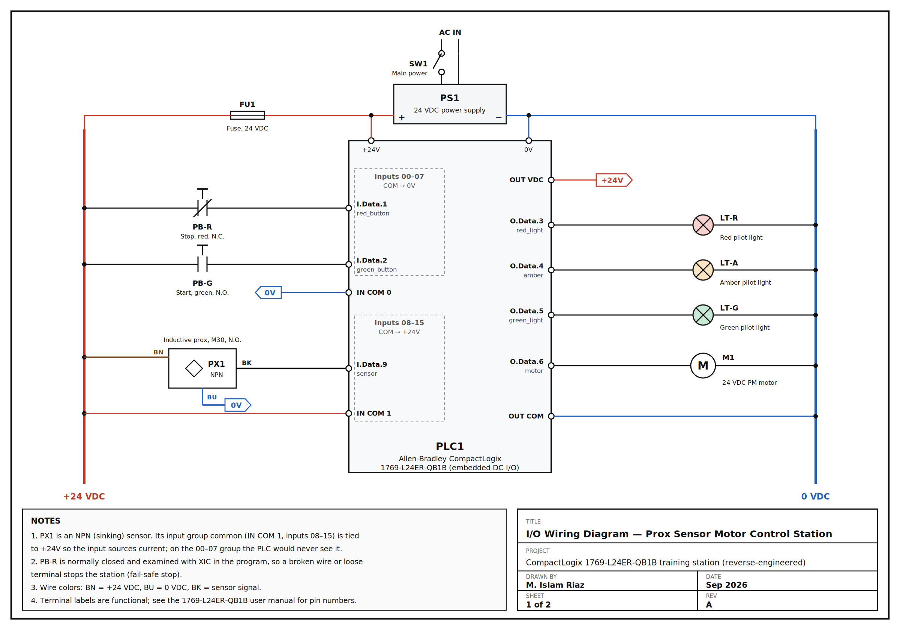
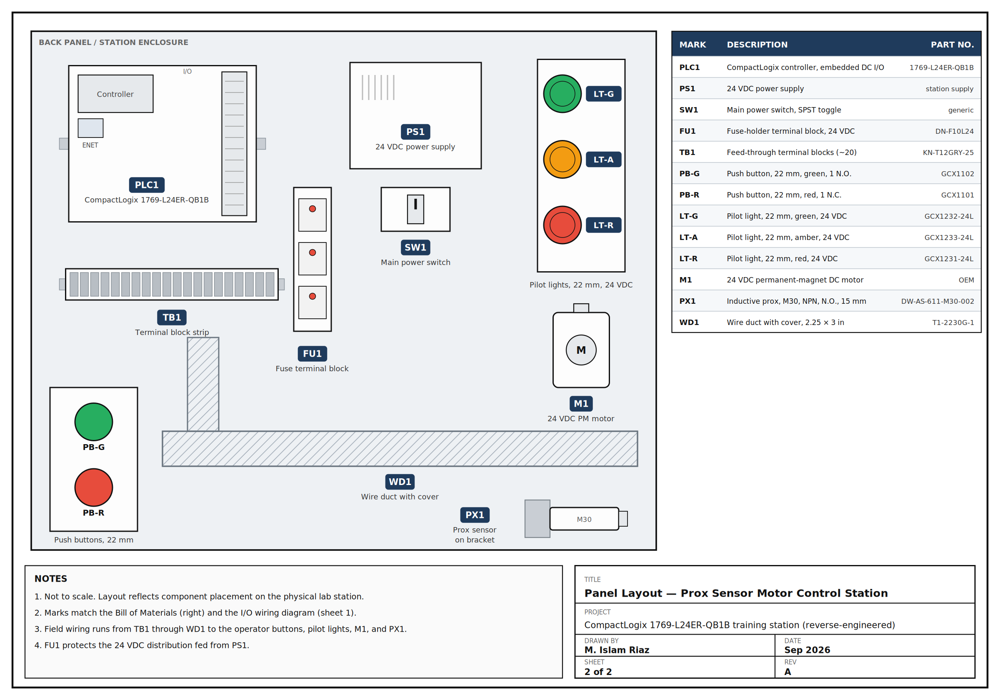
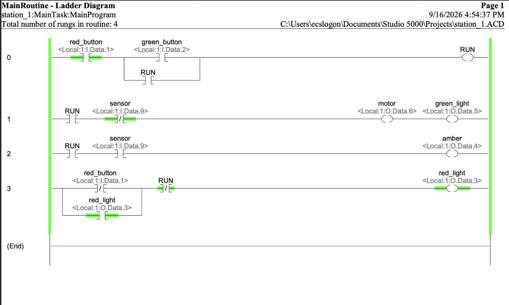

Prox Sensor Motor Control Station
I reverse-engineered a PLC training station built on an Allen-Bradley CompactLogix 1769-L24ER-QB1B, integrated a 3-wire NPN inductive proximity sensor, programmed the control logic in Studio 5000, and documented the station with a Bill of Materials, panel layout and wiring diagram so it can be rebuilt.
Sensor wiring
Brown to +24 VDC, blue to 0 VDC, black signal to Local:1:I.Data.9.
An NPN sensor sinks its output to 0 V, so it has to land in the 08–15 input group, whose common is tied to +24 V. On the wrong group the sensor LED lights up but the PLC never sees the signal.
I/O map
| Tag | Address |
|---|---|
red_button (N.C.) | Local:1:I.Data.1 |
green_button (N.O.) | Local:1:I.Data.2 |
sensor | Local:1:I.Data.9 |
motor | Local:1:O.Data.6 |
green_light | Local:1:O.Data.5 |
amber | Local:1:O.Data.4 |
red_light | Local:1:O.Data.3 |
Logic
- Rung 0: Latches
RUNfrom the green button, with the N.C. red stop examined with XIC (fail-safe). - Rung 1: Runs the 24 VDC motor and green light while
RUNis on and the sensor is clear. - Rung 2: Turns on amber while
RUNis on and metal is detected. - Rung 3: Latches red when Stop is pressed and clears it on restart.
Design fix
The first version had the sensor in series with the RUN seal-in, so a detection dropped the latch and the motor never restarted. Moving the latch to its own rung lets the station resume when the target clears.
Testing
On hardware: motor and green seal in, the sensor swaps motor/green for amber and back, Stop kills all outputs and latches red, and the sensor is ignored until the station is restarted.
Bill of Materials
| Mark | Qty | Description | Part No. |
|---|---|---|---|
| PLC1 | 1 | CompactLogix controller, embedded DC I/O | 1769-L24ER-QB1B |
| PS1 | 1 | 24 VDC power supply | (station supply) |
| FU1 | 1 | Fuse-holder terminal block, 24 VDC, blown-fuse LED | DN-F10L24 |
| TB1 | ~20 | Feed-through terminal blocks, 35 mm DIN | KN-T12GRY-25 |
| PB-G | 1 | Push button, 22 mm, green, 1 N.O. | GCX1102 |
| PB-R | 1 | Push button, 22 mm, red, 1 N.C. | GCX1101 |
| PX1 | 1 | Inductive prox sensor, M30, NPN, N.O., 3-wire, 15 mm | DW-AS-611-M30-002 |
| M1 | 1 | 24 VDC permanent-magnet DC motor | OEM |
| LT-G | 1 | Pilot light, 22 mm, green, 24 VDC LED | GCX1232-24L |
| LT-A | 1 | Pilot light, 22 mm, amber, 24 VDC LED | GCX1233-24L |
| LT-R | 1 | Pilot light, 22 mm, red, 24 VDC LED | GCX1231-24L |
| WD1 | as req'd | Wire duct with cover, 2.25" x 3" | T1-2230G-1 |
| SW1 | 1 | Main power switch, SPST toggle | generic |
Drawings & screenshots





